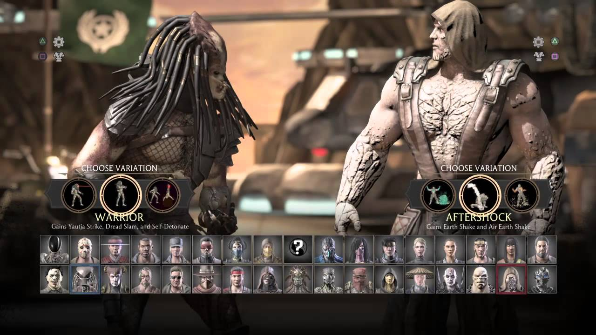

Mortal Kombat Guide and Tips, ALL fatalities, Characters Combo
How to launch fatalities and combos with your favorite characters
By Kelompok 5
Mortal Kombat X Characters Select

Mk X characters select menu allows player to choose their favorite character. There is 35 characters and each characters have 3 variants. That is mean player can choose 35 and 105 total variants.
The characters are arranged in a grid format, with rows and columns showing all available fighters. Each character is represented by a square portrait that highlights their appearance.
Once a character is selected, the menu gives you the option to choose between three different fighting variations. These variations alter the character's abilities and moves, making the selection process more strategic.
<<<<<<< HEAD
=======
>>>>>>> b2ce8a97cf7e3429a1a7796bac14dab0e89b00ef